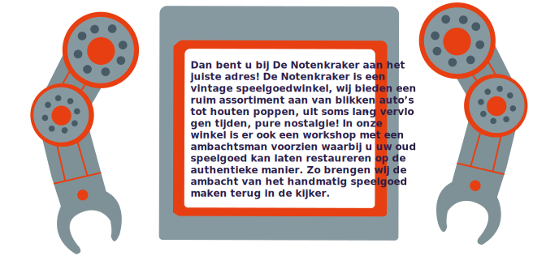

OPENING
"DE NOTENKRAKER"
Haalt u graag jeugdherinneringen op? Bent u al jaren op zoek naar dat ene spelgoed dat u nooit hebt gekregen? Of bent u verzamelaar van vintage collector items?

De Notenkraker is een POP UP store waar je gedurende een maand in onze winkel kan komen rondsnuisteren. Wij zijn geopend van 30 mei tot en met 30 juni. Onze winkel is gevestigd op het
Sint-Jansvlietplein in de antiekbuurt van Antwerpen.
Sint-Jansvliet
2000 ANTWERPEN
Tel. 01 23 456 789